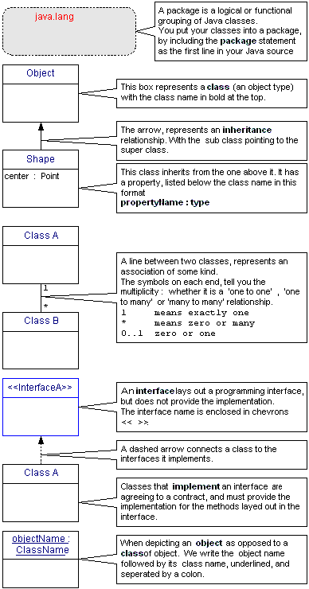

|
|
A modifier keyword for classes and their member methods. public abstract void rotate(Shape s, float I, int axis)
You cannot create a new instance of an abstract class, it is only meant to be extended by subclasses. public abstract class Shape {.. } A class must be abstract when :
|
||||||||||||||||||||||||||||||||||||||||||||||||||||||||||||||||||||||||||
|
Note: only 1 access modifier can be applied to a method or variable at a time. |
Access modifiers are keywords that can be applied
to the member variables or methods in a class, and act to restrict references
to members from outside the class. public - a public member can be accessed by any outside class that has access to the member’s class. A public class, is accessible to classes in other packages, this is the only access modifier that applies to a class as a whole. protected - a protected member can only be accessed from classes within the same package, or by subclasses of the member’s own class in the same or a different package. private - a private member can only be referenced from within the class it is defined in. package level access is the default ( if no access modifier is defined ), and permits access within the same package, but prevents access from outside the package to which the class belongs. |
||||||||||||||||||||||||||||||||||||||||||||||||||||||||||||||||||||||||||
| Applet |
An Applet is a Java object, whose class extends either java.applet.Applet or javax.swing.JApplet classes.
|
||||||||||||||||||||||||||||||||||||||||||||||||||||||||||||||||||||||||||
| Arithmetic operators. |
|
||||||||||||||||||||||||||||||||||||||||||||||||||||||||||||||||||||||||||
| Arrays |
Arrays are objects in Java, you must use the keyword new to allocate
space for an array. float weightArray []; //2 character Array pointers //Array of 3 object reference
initialized to nulls You can think of a multi-dimensional array, as an 'array of arrays'. For example to define 4 arrays with null object references of type int[] : int vertexArray [][] = new int [4][]; //4
rows, no cols yet! //Declare and construct a 2D
array Arrays are fixed length, so the java.lang.System
class has a handy method for System.arraycopy(fromArray, startAt, toArray, startAt, length); |
||||||||||||||||||||||||||||||||||||||||||||||||||||||||||||||||||||||||||
| behavior | A behavior, is a generic term for all the 'things' an object can do at run time. You manipulate objects in Java by referencing their member methods and variables. The behaviors are the manifestations of the methods coded into the object, as opposed to properties which is another name for the variable data coded into the object. | ||||||||||||||||||||||||||||||||||||||||||||||||||||||||||||||||||||||||||
| boolean | A fundamental datatype of the Java language, which can only be assigned the values true or false. Unlike some languages, you cannot test a boolean variable for the integer values 0 (false) or 1 (true). The default value for a boolean variable is false. | ||||||||||||||||||||||||||||||||||||||||||||||||||||||||||||||||||||||||||
| break |
A keyword that affects execution flow.break is used from within for loops or the switch statement to ‘break out’ of the iteration or case construct. It can be used in combination with a label, to control execution in a manner similar to the goto statement : outer:for (int x = 0; x < 8; x++) {
for (int y = 0; y < 8; y++) {
if (myArray[x][y] == ‘X’) {
system.out.println("X at" + x + "," + y);
//break out of both loops
break outer;
|
||||||||||||||||||||||||||||||||||||||||||||||||||||||||||||||||||||||||||
| byte |
A fundamental datatype of the Java language, that occupies 8 bits of storage A byte can be assigned integer values between negative 2 7 (2
to the power of 7 or -128) and positive (2 7) - 1 (2 to the
power of 7 minus 1 or +127) . |
||||||||||||||||||||||||||||||||||||||||||||||||||||||||||||||||||||||||||
| case | A keyword that affects execution flow.It is a part of the switch statement, and executes a block of statements depending upon the value of the variable tested and which case is true. | ||||||||||||||||||||||||||||||||||||||||||||||||||||||||||||||||||||||||||
| casting |
When you assign an object reference to a variable of a different type, or when you reference a method with the 'wrong' types or arguments, the Java compiler performs automatic conversion of the class, if it is legal.
While an objects class is unchanging, it may be referenced by variables
of different types. Casting up from a subclass to a more generic super
class is automatically handled at runtime, however you must explicitly
cast down the inheritance hierarchy to a more detailed subclass, in order
to cleanly compile.
|
||||||||||||||||||||||||||||||||||||||||||||||||||||||||||||||||||||||||||
| catch |
A keyword that affects execution flow.The catch statements can follow the try construct for handling Exception or Error objects, thrown by methods that cannot complete processing. The keyword is followed by the type of Throwable exception object in parentheses, that is handled by the statement block that follows. catch (IOException e) {
// statements to handle the Exception object here
}
|
||||||||||||||||||||||||||||||||||||||||||||||||||||||||||||||||||||||||||
| char | A fundamental datatype of the Java language, that stores
characters using the 16 bit Unicode character set. The ASCII character constants are quoted such as char a = ‘a’; Characters can be represented using the escape sequence ‘\uxxxx’ , where xxxx represents a four digit hexadecimal value. The 256 characters of the ASCII character set are represented in the range ‘\u0000’ to ‘\u00FF’, the default value for a char variable is the character ‘\u0000’ (which is not a space character). Special escape sequences can be used to represent non-printable characters (‘\n’ newline is shorthand for ‘u\000A’, and ‘\r’ carriage return is ‘\u000D’ ..etc). |
||||||||||||||||||||||||||||||||||||||||||||||||||||||||||||||||||||||||||
|
A class definition is a kind of 'template' for objects which are built and manipulated at runtime. |
The class statement in Java is used to define a new type of object. Class names are capitalized by convention, to distinguish them from package and method names. class MyClass extends SuperClass A class always inherits from and extends another 'parent' or super class. Shown at left is the inheritance tree of the Window class, which is in the java.awt package. Java, uses the keyword extends in a class definition, to signify
this relationship, and name the parent class. By default a class is only accessible to other classes in the same package. See also inner classes. |
||||||||||||||||||||||||||||||||||||||||||||||||||||||||||||||||||||||||||
| const | Reserved for future use (in the C language it is used much as final is used in Java to define a variable with an unchanging value). | ||||||||||||||||||||||||||||||||||||||||||||||||||||||||||||||||||||||||||
| constructor | Constructors are methods that have the same name as the
class, but have no return type (not even void).
Constructor methods are not inherited by any subclasses, they are specific to the class after which they are named. If you do not define your own constructors for a class, Java implicitly makes use of a default 'no arguments' constructor, whose sole purpose is to invoke the 'no-args' constructor of the super class like this : super( );. Note: The no-args constructor of the parent class is always implicitly called by Java at the beginning of a class's constructor, unless a different super class constructor is explicitly invoked as the first statement. This is how the inheritance hierarchy is built at runtime. Constructors may be overloaded, and you may invoke another constructor for the current object using a method reference : this( parameter-list ); You can use the statement super( parameter-list ); to explicitly invoke a constructor method in the parent class. If you invoke an alternate constructor method, it must be the first statement in the method block (to prevent access to un-initialized objects). |
||||||||||||||||||||||||||||||||||||||||||||||||||||||||||||||||||||||||||
| class diagram |
A class diagram is one of the major modelling diagram conventions in
the Unified Modelling Language (UML). Class diagrams are 'static', that
is, they display what types of objects interact but not what happens when
they do interact.
Names of abstract classes, such as a Payment, are written in italics. Relationships between classes are the connecting links, and can be made up of, associations, aggregation and generalization (aka inheritance). These links may have explanatory role names on each end, may be directional, and can indicate the multiplicity (the number of possible instances of the class associated with a single instance of the other end).  |
||||||||||||||||||||||||||||||||||||||||||||||||||||||||||||||||||||||||||
| continue |
A keyword that affects execution flow. It is used in for loops to continue with the next iteration of the loop : for (int i = 0; i < shapeArray.length; i++) {
if (shapeArray[i] instanceof Line) {
continue;
} else {
shapeArray[i].draw(); //draw 2D Shapes
}
}
|
||||||||||||||||||||||||||||||||||||||||||||||||||||||||||||||||||||||||||
|
|||||||||||||||||||||||||||||||||||||||||||||||||||||||||||||||||||||||||||
| default | A keyword that affects execution flow. It is a part of the switch statement, and executes a block of statements as a ‘catch-all’ or default case, if none of the cases above it are true. |
||||||||||||||||||||||||||||||||||||||||||||||||||||||||||||||||||||||||||
| do |
A keyword that affects execution flow. Used to iterate or loop through a block of statements, at least once, and thereafter while some condition is true. do {
//do this block of statements at least once
} while (taxDeductionArray[i] != null);
|
||||||||||||||||||||||||||||||||||||||||||||||||||||||||||||||||||||||||||
| documenting code |
|
||||||||||||||||||||||||||||||||||||||||||||||||||||||||||||||||||||||||||
| double |
A fundamental datatype of the Java language, that stores signed 64 bit
floating point numbers. double d = 1.0245678 E+12 |
||||||||||||||||||||||||||||||||||||||||||||||||||||||||||||||||||||||||||
| else |
A keyword that that effects execution flow. It can follow the if conditional statement, and marks where processing should proceed from, if the condition is false. if (year > 50)
century = 19;
else
century = 20;
|
||||||||||||||||||||||||||||||||||||||||||||||||||||||||||||||||||||||||||
| encapsulation |
Encapsulation, is an OOP design principle, where the internal workings of an object (the member variables and methods) are hidden from other objects or software. This is useful because you can seperate the 'how' from the 'what'. Outside clients of the object can only interact with the public interface presented by the object, and they can be prevented from seeing what goes on inside. Encapsulation isn't always practical in the real world, but it does provide benefits :
|
||||||||||||||||||||||||||||||||||||||||||||||||||||||||||||||||||||||||||
| equals( ) method | By default both the equivalence operator == and the public boolean equals(Object other) method (inherited from java.lang.Object), when applied to 2 object variables, actually compare the references to see if they point to the same location in memory. However many classes override the equals( ) method to compare the properties of the objects referenced to see if the objects themselves are equivalent e.g String, Date and the datatype 'wrapper' classes do this. | ||||||||||||||||||||||||||||||||||||||||||||||||||||||||||||||||||||||||||
| Exception |
All Exceptions are derived from the java.lang.Throwable class. Methods can only throw (or let go uncaught) exceptions
listed in the methods throws clause (or subclasses of the Exceptions listed
there). |
||||||||||||||||||||||||||||||||||||||||||||||||||||||||||||||||||||||||||
| extends |
A keyword in the class statement, that can be used to specify which super class the current class extends (or inherits from). By default, all classes are descended from the generic java.lang.Object class. public class Circle extends AbstractShape {
// member variables and methods here ..
}
|
||||||||||||||||||||||||||||||||||||||||||||||||||||||||||||||||||||||||||
| false | A boolean value (that is not true). | ||||||||||||||||||||||||||||||||||||||||||||||||||||||||||||||||||||||||||
|
|
A modifier keyword, that can be applied to classes, or member variables
and methods, to prevent them from being changed (overridden) by subclasses.
final int ROTATE_CLOCKWISE = 1;
final UserID getUserID() {
//do secure processing
}
|
||||||||||||||||||||||||||||||||||||||||||||||||||||||||||||||||||||||||||
| finally | A keyword that that effects execution flow. It can follow the try {…} catch {…} statement, and delimits a statement block that is always executed , regardless of the outcome of the try and catch blocks. | ||||||||||||||||||||||||||||||||||||||||||||||||||||||||||||||||||||||||||
| float |
A fundamental datatype of the Java language, that stores signed
32 bit floating point numbers. float rotateAngle = mouseDrag / 100 * 360; |
||||||||||||||||||||||||||||||||||||||||||||||||||||||||||||||||||||||||||
| for |
A keyword that that effects execution flow. for (int x = 0, int y = myArray.length(); x < y; x++) {
// do some repetitive task involving myArray here ..
}
You can use the break statement, to break out of a for loop , and the continue statement to goto the next loop around. You can also nest for loops, one within another, which is often useful for scanning two or three dimensional arrays. |
||||||||||||||||||||||||||||||||||||||||||||||||||||||||||||||||||||||||||
| goto | Reserved for future use. | ||||||||||||||||||||||||||||||||||||||||||||||||||||||||||||||||||||||||||
| implements |
A keyword in the class statement, that can follow the extends clause, to indicate which interfaces, this class will provide methods for. class Rectangle extends AbstractShape |
||||||||||||||||||||||||||||||||||||||||||||||||||||||||||||||||||||||||||
| import |
Use any number of import statements after the package statement in your java source file, to make classes in other packages available. import java.awt.Point; To make all classes in a package available : import java.util.*; |
||||||||||||||||||||||||||||||||||||||||||||||||||||||||||||||||||||||||||
| inheritance |
One of the big advantages of Object Oriented Programming (OOP), is the
ability to base a type of object on an existing object definition. Java
classes can inherit from a parent class (termed the
super class), and reuse its properties and behaviors. |
||||||||||||||||||||||||||||||||||||||||||||||||||||||||||||||||||||||||||
| initialization |
If you do not explicitly initialize the instance variables that 'belong to' a class, Java guarantees that they are initialized to their default values, shown below.
|
||||||||||||||||||||||||||||||||||||||||||||||||||||||||||||||||||||||||||
| inner classes | Inner classes were introduced in Java 1.1 and can be defined
inside other classes. A class defined within another class scope, can have any access modifier keyword (public, protected or private). However a class defined within a statement block (within a method) must not have any access modifier (such a class is effectively private to the statement block). A class defined within a statement block cannot also be static. Inner classes (unless they are static) have an implicit reference to the instance of the enclosing class, therefore this (the current instance) must be available before a new instance of the inner class can be constructed. The enclosing class must be constructed before the inner class. Inner classes (unless they are static) can access all the members (even private ones) of the enclosing class. Additionally inner classes defined within a method, can access any final variables and parameters (constants only) of the enclosing method block. Anonymous inner classes, have no name, no constructors, and must be instantiated in the same statement in which they are defined for example: button1.addActionListener ( Anonymous inner classes, may implement interfaces or extend other classes (such as adapter classes), but not do both. |
||||||||||||||||||||||||||||||||||||||||||||||||||||||||||||||||||||||||||
| instanceof |
An operator that can be used to test whether a particular object is an instance of a class, inherits from that class, or implements an interface. Shape s = new Circle(x,y,radius,Color.blue);
if (s instanceof Circle)
system.out.println("Shape is a Circle!");
if (s instanceof Rotatable)
system.out.println("Shape is Rotatable");
|
||||||||||||||||||||||||||||||||||||||||||||||||||||||||||||||||||||||||||
| int |
A fundamental datatype of the Java language, that occupies 32 bits of
storage. The capacities for integer data types are given by the formulae : int IncomeYTD = 75,250; |
||||||||||||||||||||||||||||||||||||||||||||||||||||||||||||||||||||||||||
|
|
Java enforces a single inheritance structure for classes, but you can define interfaces to encapsulate chosen properties and behaviours, and implement these in your classes, without impacting inheritance. An interface, defines class constants (that is static final variables) and abstract methods only. Interface Rotatable extends Transform {
//all member variables are static and final
//all member methods are abstract
}
Note: You should not code the static, final or abstract keywords in an interface, these are the defaults. Interfaces can inherit from one another, just as classes do. The 'tree' structure of java class inheritance at first, lends simplicity and structure to your own classes. However, it can become limiting in complex designs, where you want to 'cross fertilize' ideas from different branches of the hierarchy. You can inherit behaviours and properties not necessarily integral to your class, by implementing any number of interfaces. Interfaces give your software more flexibility and are often useful in the following situations:
|
||||||||||||||||||||||||||||||||||||||||||||||||||||||||||||||||||||||||||
| instance |
An instance, refers to a particular occurrence of a class at runtime
(an object), with its' own unique properties. |
||||||||||||||||||||||||||||||||||||||||||||||||||||||||||||||||||||||||||
| keywords |
This is how Java modifier keywords apply to classes and members.
Note: 'Static initializer' blocks also make use of the keyword
static followed by statements in curly braces, that are executed once
at class load time.
|
||||||||||||||||||||||||||||||||||||||||||||||||||||||||||||||||||||||||||
| long |
A fundamental datatype of the Java language, that occupies 64 bits
of storage. long l = 9,223,372,036,854,775,808L; |
||||||||||||||||||||||||||||||||||||||||||||||||||||||||||||||||||||||||||
| member | This is a general term that encompasses the variables and methods, that are defined within the class definition, and which ‘belong’ to the class as a whole (static members) or to objects based upon that class. | ||||||||||||||||||||||||||||||||||||||||||||||||||||||||||||||||||||||||||
| method | A method is defined with a unique ‘signature’
that is it’s name and the parameters it accepts and the type of variable
or object it returns to it’s invoker. A static member method ‘belongs’ to the class as a whole and not to any one instance of the class. References to a static method or variable are preceded with the class name, as opposed to the name of an object pointer (or instance variable). A static method cannot be overridden. A final method cannot be overridden by any method in a subclass. When 'overriding' a method, the subclass must define it's own version with the same 'signature' and return-type, as that in the super class. When 'overloading' a method, a class defines several alternative versions of the method with different parameter lists ( the return-type plays no part in the 'signature' of a method ). |
||||||||||||||||||||||||||||||||||||||||||||||||||||||||||||||||||||||||||
| method parameters | Fundamental datatypes (like int and boolean) are passed
'by value' (a copy of the data is made and passed into the method),
so that any changes made in the method do not effect the original value.
Objects are passed 'by reference' into a method. When passing an object variable to a method, a copy of the object reference is made and passed to the method. Any changes made in the method, through the reference, are reflected back in the original object itself (in Java you only ever deal with object 'handles' or 'references').
|
||||||||||||||||||||||||||||||||||||||||||||||||||||||||||||||||||||||||||
| native |
Declaring a method as native, means that it is implemented in a compiled
language that is 'native' to the operating system. A native method cannot
also be abstract. A native method does not
have an implementation. For example the java.lang.Math
class makes use of native methods: |
||||||||||||||||||||||||||||||||||||||||||||||||||||||||||||||||||||||||||
| new |
To create an object (an instanceof a class) from a class, follow new by the class name, and any parameters required by the constructor method for that class. Point p = new Point(20, 40); A reference to the new object is returned by new. You do not have to use new for the fundamental data types and Strings, which are built-in to Java. |
||||||||||||||||||||||||||||||||||||||||||||||||||||||||||||||||||||||||||
| null |
Represents a non-existent reference to an object. If you try to access a null reference as if were an object, you will get the dreaded NullPointerException at runtime. This usually means you have forgotten to properly initialize your object references or you should test for null. //Passed a reference to a Circle object
public void move(Shape s, int x, int y) {
//Check we have a Shape object
if (s != null) {
s.erase();
s.setX(x);
s.setY(y);
}
}
|
||||||||||||||||||||||||||||||||||||||||||||||||||||||||||||||||||||||||||
|
|
An object is a particular 'runtime' representation of a class. The new statement, serves to create an instance of a class (an object) at runtime. The methods and variables in an object are referenced through an object pointer variable, and objects are passed by reference when used as parameters. |
||||||||||||||||||||||||||||||||||||||||||||||||||||||||||||||||||||||||||
| overloading methods. | A class may define more than one version of a method,
with the same method name but different parameters. Overloaded methods are
useful when performing the same functions with different sets of data. Java tries to find the method with the 'best fit' for a particular method reference, and will automatically 'promote' the parameter types, provided information is not lost in the process. In contrast to the situation for overiding a method, a difference in return-type does not play any part in overloading methods (return-type is not part of a methods' signature). Overloaded methods are effectively independent members, there are no restrictions upon return-type, access modifier keywords or the Exceptions they can throw. |
||||||||||||||||||||||||||||||||||||||||||||||||||||||||||||||||||||||||||
| overriding methods. | A subclass can 'override' the implementation of a
method that it inherits from its super class, by defining its own version
of that same method with identical parameters and return-type. The special object reference keyword super is used to reference the version of the method in the parent class for example : super.MyMethod(parameter); Note: The overiding version of the method in the subclass cannot have an access keyword that is more private than the overidden method definition (although it can be more public). As noted below in exceptions, the overiding method can choose to throw a subset of the exceptions listed by the overidden method, but cannot add new types of exception. As noted in polymorphism (point 2), the method invoked at runtime, depends upon the class of the object and not the class of the object variable used to reference that object. |
||||||||||||||||||||||||||||||||||||||||||||||||||||||||||||||||||||||||||
|
|
Use the package keyword followed by a package name, as the first statement in your java source file, to help you organize your classes. package com.mydomain.shapes; At runtime, Java will expect your class to be in the com/mydomain/shapes folder, relative to the codebase (the current working directory of the class file). All classes come in packages, which serve to organize them in a way similar to files in a file system. Packages also serve as a basis on which to control access to classes from other 'outside' classes. References to classes and their member methods and variables inside other packages is generally only allowed if they are defined with the public access modifier keyword. Package names can be 'nested' with a dot notation like java.awt.event,
and are lowercase by convention. |
||||||||||||||||||||||||||||||||||||||||||||||||||||||||||||||||||||||||||
| polymorphism |
Because a subclass inherits all the properties and behaviors of its parent class, objects of the subclass can be treated as instances of the more generic super class. For example : Shape s = new Circle( ); // a Circle 'is a' Shape
|
||||||||||||||||||||||||||||||||||||||||||||||||||||||||||||||||||||||||||
|
|
An access modifier keyword, that can be applied to both classes
and member variables and methods. A public class can be accessed from
outside the package in which it is defined. /* any outside class can create a new Rectangle */
public class Rectangle extends TwoDShape {
public boolean fillRect = true;
public void draw(Graphics g) {
// draw the Rectangle into the Graphics context
g.fillRect(x,y,width,height);
}
}
|
||||||||||||||||||||||||||||||||||||||||||||||||||||||||||||||||||||||||||
|
|
An access modifier keyword, that can be applied to member variables and methods (classes cannot be private). It restricts access to the class in which the private variable or method is defined. /* no outside classes can change the security privileges
*/ |
||||||||||||||||||||||||||||||||||||||||||||||||||||||||||||||||||||||||||
|
|
An access modifier keyword, that can be applied to member variables and
methods (classes cannot be protected). protected Object clone() {
// code here to make a copy of this object ..
}
|
||||||||||||||||||||||||||||||||||||||||||||||||||||||||||||||||||||||||||
| promotion |
Fundamental dataypes may be automatically converted to another datatype by the Java compiler. This may happen as result of an assignment, a method call or during arithmetic promotion.
|
||||||||||||||||||||||||||||||||||||||||||||||||||||||||||||||||||||||||||
| properties |
A property, 'belongs' to an object and is another name for the variable data coded into the object. For example a Circle object might have radius, and area properties : public class Circle extends Shape {
// instance data
double radius;
double area;
public setRadius(double r) {
radius = r;
area = Math.PI * Math.pow(r, 2.0);
}
}
Properties may also refer to a set of key = value system properties. see the System class. |
||||||||||||||||||||||||||||||||||||||||||||||||||||||||||||||||||||||||||
| return |
A keyword that returns control from a method (with an optional argument), to the ‘calling’ statement. If a method is defined with a return type of void, no argument can be passed back to the statement that made the reference to it. public float getArea(float radius) {
return math.PI * (r * r);
}
|
||||||||||||||||||||||||||||||||||||||||||||||||||||||||||||||||||||||||||
| short |
A fundamental datatype of the Java language, that occupies 16 bits
of storage.A byte can be assigned integer values between negative 2 15
(2 to the power of 15 or -32,768) and short TVchannels = 500; |
||||||||||||||||||||||||||||||||||||||||||||||||||||||||||||||||||||||||||
| short circuit | If you use the short circuiting boolean operators &&
(AND) , || (OR) in an if( ) statement, Java halts execution
as soon as the outcome can be determined for certain:
|
||||||||||||||||||||||||||||||||||||||||||||||||||||||||||||||||||||||||||
|
|
Precede a member variable or method with this keyword, to indicate that it ‘belongs’ to the class as a whole, and not to any one instance of the class. You cannot reference variables that belong to an object instance, from within a static method. static int employeeCount = 0;
|
||||||||||||||||||||||||||||||||||||||||||||||||||||||||||||||||||||||||||
| String |
The java.lang.String class is final and cannot be
subclassed. Strings are given certain unusual privileges in Java : 2. The operators + and += are overloaded for Strings : they do
the same as the append( ) method for Strings. When the compiler sees that
one of the arguments in an expression is a String, it knows to use append(
) instead of arithmetic. Note: Java does not allow you to 'overload' the operators of the language. 3. You cannot change a String object after it has been created, String objects are immutable. The concatenation operation shown above, creates an entirely new String object "abc123" and assigns it to s1. For the most part, all the methods in the String class also return an entirely new String object ! Java provides the java.lang.StringBuffer class for mutable strings of characters.
|
||||||||||||||||||||||||||||||||||||||||||||||||||||||||||||||||||||||||||
|
|
A special variable available to all Java objects to use to refer to their immediate superclass. It is often used to pass method processing up the inheritance hierarchy: // allow the parent init() method to process |
||||||||||||||||||||||||||||||||||||||||||||||||||||||||||||||||||||||||||
| switch |
The switch statement is Javas case construct, which provides a convenient way to pick from a variety of possible values in an integer datatype. switch (marital) {
The switch statement can only operate with an argument of types, byte,
short, char or int (you
cannot test long, float, double or object references). The arguments to the case clauses, must be constants or constant expressions that can be determined at compile time (no variables are allowed). |
||||||||||||||||||||||||||||||||||||||||||||||||||||||||||||||||||||||||||
|
|
Only one thread at a time can access the synchronized methods for a particular object or class. synchronized void criticalCode() {
/* this code must be processed to completion before
another thread can begin processing it */
}
If you precede a block of statements with synchronized and an object reference or class name , a lock will be taken upon that object or class, as a thread enters the code, that will prevent other threads executing synchronized code in the object or class. synchronized (this) { When overriding a method, the subclass may include or exclude the synchronized keyword, as it sees fit. |
||||||||||||||||||||||||||||||||||||||||||||||||||||||||||||||||||||||||||
| this |
A ‘special’ variable, that is available to all Java objects to use to refer to themselves. It is often used to get to instance variables, when local variables ‘mask’ their names, or to pass the current instance to another object or method. int radius = 0; public void init(Point center, int radius) {
this.radius = radius;
this.center = center;
}
|
||||||||||||||||||||||||||||||||||||||||||||||||||||||||||||||||||||||||||
| throw |
A keyword that affects execution flow. A method uses this keyword
to create an instance of an Exception, and return it to the try
{ … } catch {…} statement that called it.
URL getURL(URL u, String s) throws MalformedURLException {
// if processing fails to read from the URL passed
throw new MalformedURLException();
}
|
||||||||||||||||||||||||||||||||||||||||||||||||||||||||||||||||||||||||||
| throws |
Java keyword in a method definition, that lists all the ‘checked’ Exceptions a method can throw. When you reference this method, the Java compiler ensures that you specify a try {…} catch {…} block, to handle all the Exceptions that might be thrown back to you. public void myMethod(InputStream I, File f) |
||||||||||||||||||||||||||||||||||||||||||||||||||||||||||||||||||||||||||
| transient | Use this keyword in front of a variable, to indicate to the Java runtime that this variable is NOT a part of the persistent state of an object. Transient properties are not serialized when an object is written out to a file. | ||||||||||||||||||||||||||||||||||||||||||||||||||||||||||||||||||||||||||
| true | The boolean value (that is not false). | ||||||||||||||||||||||||||||||||||||||||||||||||||||||||||||||||||||||||||
|
|
A keyword that is used to handle Exceptions and effect execution
flow. try { Note: The finally { } block is optional and is always executed,
even if an 'unchecked' or 'runtime' exception is raised, or if you return
from the method within the try { } block.
|
||||||||||||||||||||||||||||||||||||||||||||||||||||||||||||||||||||||||||
| UML |
Is an acronym for the Unified Modelling Language.
|
||||||||||||||||||||||||||||||||||||||||||||||||||||||||||||||||||||||||||
| variable | A variable is defined to be either one of the fundamental data-types of the Java language, or
a reference to another type of object, such as a Font object or String object.
A variable has a scope , and can be defined as 'belonging to' the class as a whole, or to just a member method within the class, or even to just a block of statements, enclosed within { } braces. A static variable exists only once across all instances of the class, all objects of that class, share the same value in that static variable. A final variable cannot be changed after it is defined, it has a constant value. |
||||||||||||||||||||||||||||||||||||||||||||||||||||||||||||||||||||||||||
| void | Is used as a kind of ‘placeholder’ in a method definition, that has no return type. | ||||||||||||||||||||||||||||||||||||||||||||||||||||||||||||||||||||||||||
| volatile | You can use this keyword with a variable definition, to alert the compiler to the possibility that the value of this variable, may be changed asynchronously (by another thread), and that the compiler should not try to optimize references to this variable, by replacing them with a constant value.volatile long populationCounter; | ||||||||||||||||||||||||||||||||||||||||||||||||||||||||||||||||||||||||||
| while |
A keyword that affects execution flow. Used to repeatedly execute a block of code, but only while a condition is true. while (seconds > 0 && seconds <= 30) { |